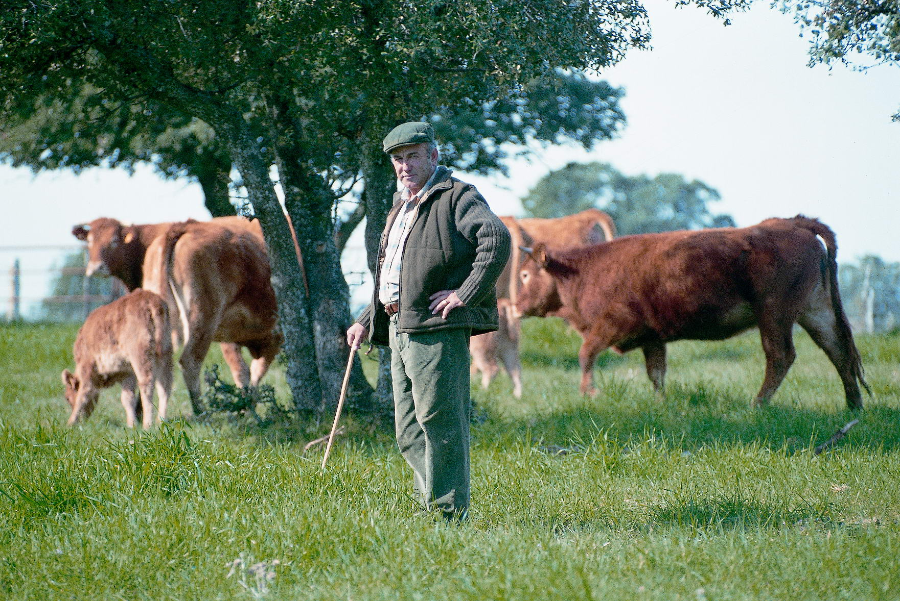

Castro Feijoo SRL es una empresa donde el espíritu del trabajo, el compañerismo y la dedicación son los cimientos sobre los que construimos nuestro legado. Desde hace generaciones, hemos forjado un camino sólido en el mundo de la ganadería, donde cada vaca que criamos es más que un simple animal; es el resultado de nuestra pasión y compromiso inquebrantable.
Nuestra empresa familiar de ganadería es más que un negocio; es un legado que continuamos con pasión y orgullo. Invitamos a todos a ser parte de nuestra historia, a unirse a nosotros en este viaje donde el trabajo, el compañerismo y la dedicación son más que palabras; son valores que nos definen y nos guían en cada paso que damos.
Nuestra empresa familiar de ganadería es más que un negocio; es un legado que continuamos con pasión y orgullo. Invitamos a todos a ser parte de nuestra historia, a unirse a nosotros en este viaje donde el trabajo, el compañerismo y la dedicación son más que palabras; son valores que nos definen y nos guían en cada paso que damos.
